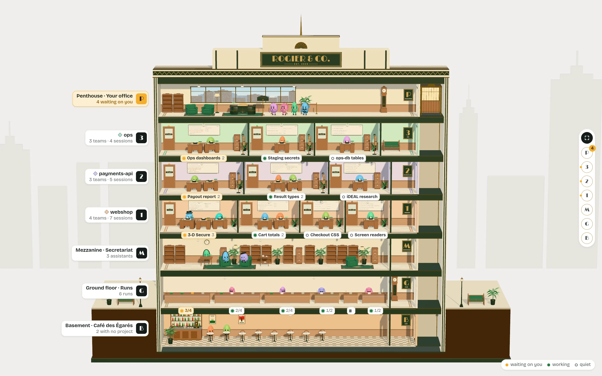
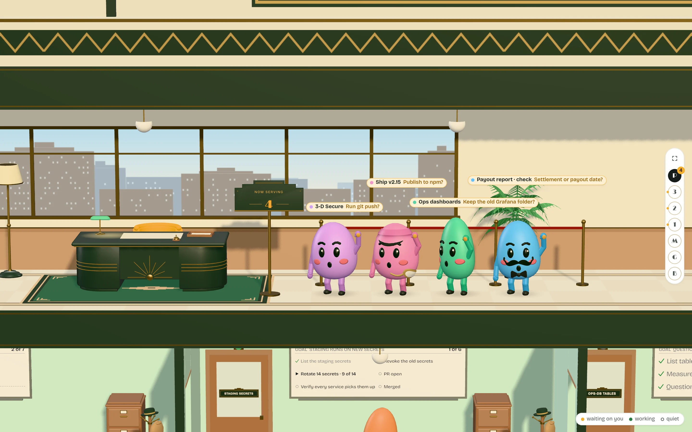
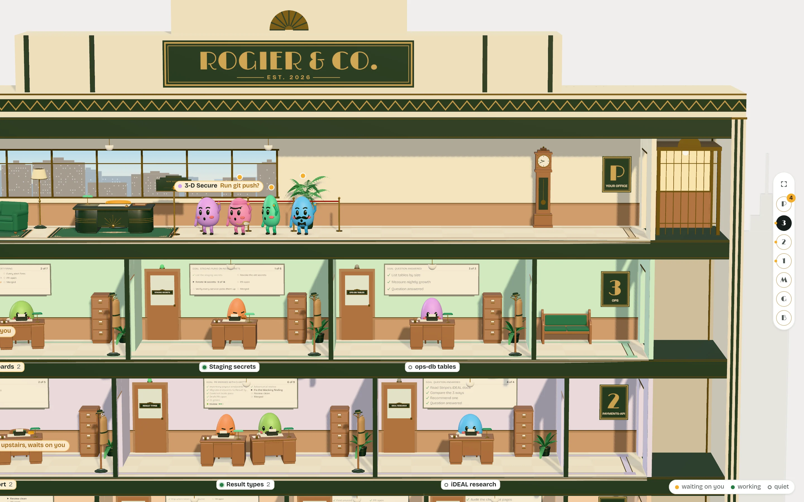

Office the Dollhouse
The firm's building, cut open at the front, on a little street. A storey per project in its tint; a room per team, sized by headcount, the lead at the head desk; a single office for a thread on its own. Each room has a frosted door with a brass plaque, a door light (marigold when anyone in it waits on you, green while it works, dark when quiet) and a whiteboard with the lead's plan: ticks, an arrow where it stands, marigold where it waits, and a row of dots per partner. Under each room a plaque gives its light, a short name and its headcount.
The penthouse is your office. "Now serving 4": the four that wait on you queue at your desk, oldest nearest, each with its ask; their desks downstairs keep a marigold note, "upstairs, waits on you". A brass lift runs up the right side. The assistants have the mezzanine, runs work the ground floor at a bench each with a card per step, and threads with no project sit in the café in the basement.
The camera rides up and down like the lift: scroll or drag, ↑ ↓ a storey, 0 the whole building, or the floor buttons on the right, where the penthouse button carries the waiting count. Click a room to fly in. Labels come by distance: floor nameplates far away, desk name tags ("review · Codex") up close.
You open it to show someone what your agents are doing, which ones work together, and who is queuing for you.

